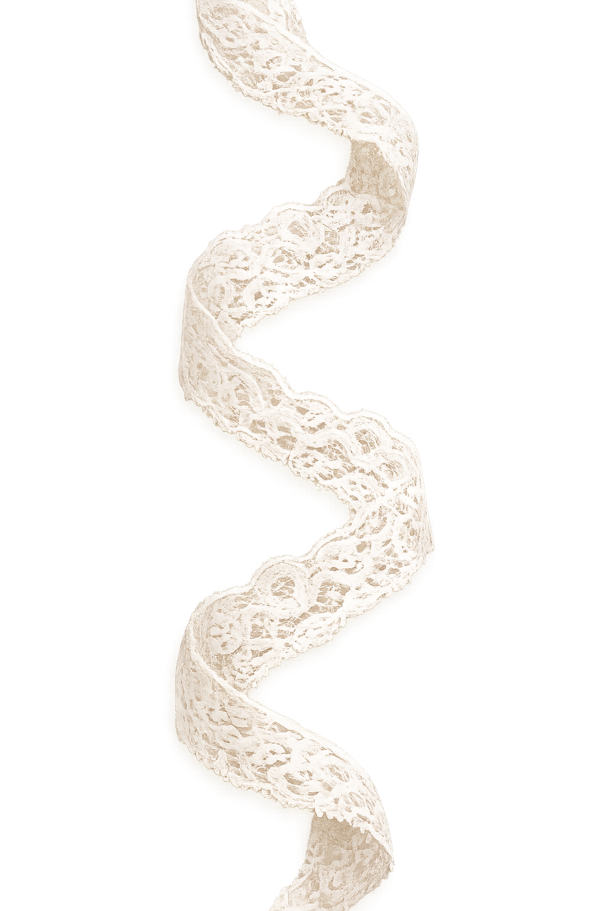

The Birth of a Poet
Sayat Nova was born in 1712 in Tiflis, into a family of Armenian artisans.
The city was then a bustling crossroads between Armenian, Georgian and Persian cultures.
Sayat Nova was born in 1712 in Tiflis, into a family of Armenian artisans.
The city was then a bustling crossroads between Armenian, Georgian and Persian cultures.
From childhood, he grew up surrounded by interwoven languages, music, and traditions an exceptional breeding ground for the man who would become one of the greatest poets of the Caucasus.
He was taught to read sacred texts from a very young age, and he displayed a keen sensitivity to words and sounds.

The poet meets his muse and experiences the awakening of love. Through symbolic images and rituals, Parajanov shows the beginning of a powerful emotional and spiritual connection.
The bond between the lovers deepens, but obstacles and separation prevent them from being together. The poet experiences desire, absence, and melancholy.
Unable to fully realize his love, the poet turns his feelings into creative inspiration. His personal emotions become poetry, music, and spiritual expression.
For several decades, Sayat Nova lived between prayer and creative work. He was ordained a priest, then an archbishop according to some sources.
A central theme in his later works is the idea that earthly beauty points toward a higher, divine reality. The language of love, which had once been directed toward human subjects, gradually becomes a language for expressing spiritual longing. In many poems, the separation between human love and divine love becomes deliberately blurred. The beloved can be understood simultaneously as a person, an ideal, or a symbol of God's presence in the world.
We are working on finishing the story of the great Sayat Nova